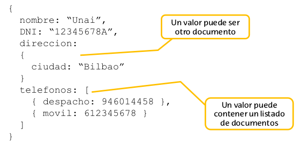
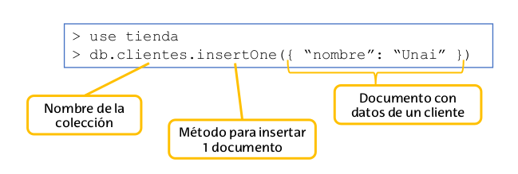
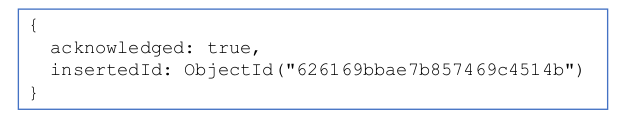

MongoDB
Mikel Egaña Aranguren
mikel-egana-aranguren.github.io

Mikel Egaña Aranguren
Mikel Egaña Aranguren
mikel-egana-aranguren.github.io
https://github.com/mikel-egana-aranguren/ABD


Un documento se organiza en formato JSON (JavaScript Object Notation): Internamente se almacena en formato Binary JSON(BSON)
Cada dato como clave valor
Un valor puede ser otro documento
Un valor puede tener varios documentos

Equivalencia aproximada con modelo relacional:
Diferencias principales con modelo relacional:

cada documento tiene un identificador único (Se asigna automáticamente en su creación, aunque también podemos asignar uno de forma manual)

Insertar múltiples documentos en una colección:
> db..insertMany( )
> db..find()
> db..find( )
> db..findOne( )
> db.clientes.find( { nombre: "Unai" } )> db.clientes.find( { nombre: "Unai", DNI: 12345 } )> db.clientes.find( { DNI: { $gt: 30000 } } )> db.clientes.find( { nombre: /M./ } ){ campoAMostrar: 1, campoAOcultar: 0}> db.clientes.find( {} , {DNI: 1, _id: 0})> db.clientes.find( {DNI: 33344}, {nombre:1, _id:0} )> db..deleteOne( )
> db..deleteMany( )
> db..deleteMany( {} )
> db..updateMany( , {$set: })
> db.clientes.updateMany({ DNI: 22233 }, {$set:{ nombre: "Nagore" } })> db..replaceOne( , )
> show collections
> db..drop()
> db.dropDatabase()
Un documento puede tener documentos embebidos o listados
Normalmente:
MongoDB no proporciona una técnica concreta para definir relaciones entre colecciones: las debemos definir nosotros
Documentos embebidos
Utilizar campos concretos como referencia

Adecuado para datos que no se solapan/repiten
(+) Los datos se agrupan lógicamente
(-) Puede generar duplicidades que debemos gestionar

Adecuado para datos que se referencien en diferentes colecciones
(+) Elimina posibles duplicidades
(-) Más complejo de gestionar
(-) Requiere agregaciones para obtener datos relacionados